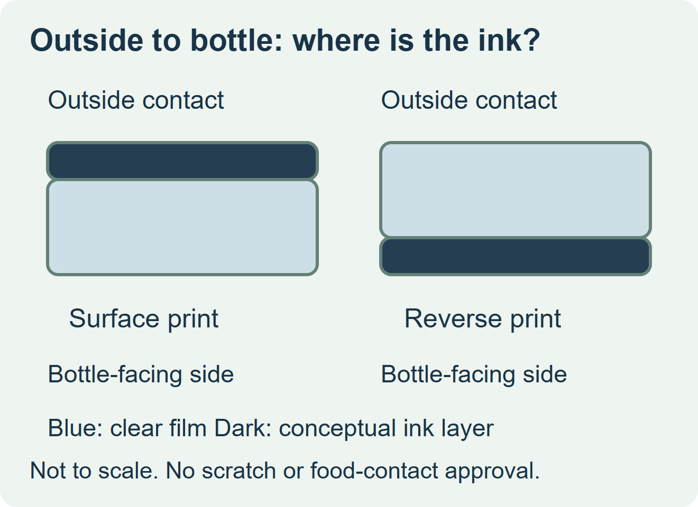
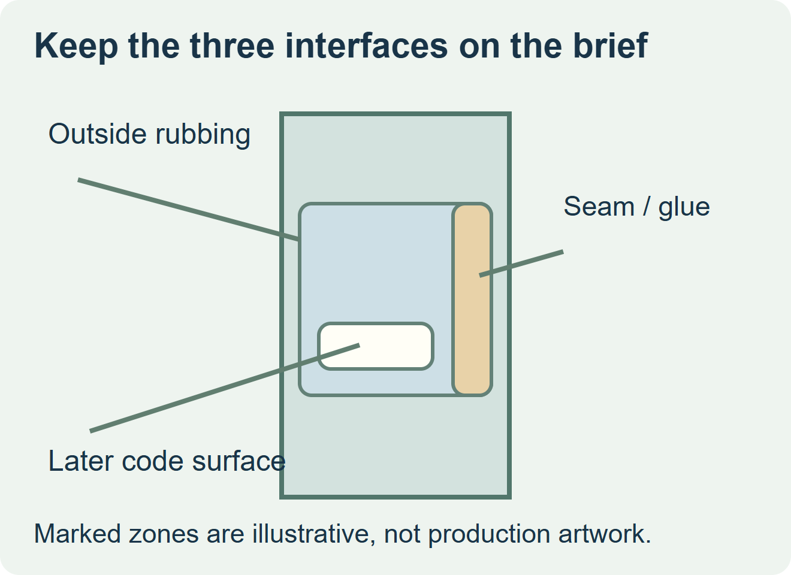

Choose a reverse-print proposal when the accepted construction places the required image behind the clear film and its complete printed wrap works on the intended bottle and line. Keep a supported surface-print proposal when its actual finish meets the same handling and appearance requirement. Ask for the outside-to-bottle layer order before approving either offer. A mirrored PDF alone does not establish that order or its protection.


Name the ink side, then identify the viewing side
In surface printing, the image is printed on the outward face in the specified construction, possibly with a coating or overlaminate above it. In reverse or second-surface printing, the image is on the back of a clear film and read through that film from the intended outside. Ask the converter to mark print direction and the actual supplied stack; terminology is not a substitute for a drawing.
LNI’s second-surface-printing explanation defines the process by placing print behind clear film. Its industrial durability statements belong to its own constructions and applications. They are not evidence that a beverage wrap is scratchproof, chemical-proof or suitable for a food-pack order.
Töpfer’s beverage wrap-label overview identifies reverse printing as a route used in wrap-around labeling. It is a process example, not proof of ZFU equipment, material availability or a transport-damage guarantee. Confirm the actual converter and bottle-line scope in the proposal.
Draw what the hand, carton and bottle will touch
Show the outer exposed surface, film, ink/white elements, any separate protective layers and the bottle-facing surface. Use the real sample to identify the layers. A reverse-printed film can put the clear film between outside rubbing and the image, but the film itself, the edges and the complete wrap can still suffer damage. Protection of one interface does not approve every exposure.
A surface-printed label with a confirmed overlaminate may also put a film above the image. Compare that actual construction with the reverse-print route rather than assume every surface print is uncovered or every reverse print removes a finishing operation. Keep added thickness, appearance and sample differences visible.


Check the contacts that changed when the print moved
| Contact or operation | What to identify | Evidence to compare |
|---|---|---|
| Outside handling | Actual film, coating or other top surface. | Finished-wrap rubbing and wet-handling observation relevant to the pack. |
| Seam or glue region | Which printed or unprinted surface meets the joining system. | Supported interface drawing and representative line sample. |
| Later date coding | The real surface available to the coding process. | Actual later mark on the finished construction. |
| Background and white | Clear areas, white layers and the bottle/liquid behind them. | Readable outside view on the relevant filled bottle. |
For a hypothetical clear beverage wrap with a small later date field, a sample may show protected brand graphics while leaving the code-zone surface unidentified. Ask for the final layer arrangement and a representative later mark. The successful colour image does not approve that separate coding operation. The same reasoning applies at a supported glue interface; no ink or coating should be silently moved into an assumed bonding region.
Do not confuse reverse printing with an image seen through the drink
A shopper may see the back of a label through a clear bottle regardless of how the outside design was printed. That is the separate through-bottle appearance decision covered by the linked guide. Reverse printing for an outside-readable protected image does not automatically create a second consumer-facing design through the liquid, and a two-sided visual mockup does not establish a protected print stack.
Agree a representative printed and applied wrap for the accepted station. Record what the sample includes and whether seam, later coding, wet handling and carton contact were represented. If it is only a hand-wrapped appearance sample, retain the line questions as open.
Compare actual offered film, print, white layers, finish, conversion, sample work and usable quantity before choosing on price. Retain the accepted stack and views with the order so a reorder cannot replace one construction with another under the same artwork filename. Availability and performance remain project-specific.
Discuss the unresolved label requirement
Send the wrap film and station references, marked outside/bottle-facing views, artwork and white-layer intent, seam/gluing interfaces, later coding, actual rubbing or wet-handling sequence, bottle samples and quantities. Review beverage label options and prepare a label specification inquiry. The contact page opens an email draft and lists email or WhatsApp for attachments. Supply, proof options, testing, pricing and timing require project confirmation.